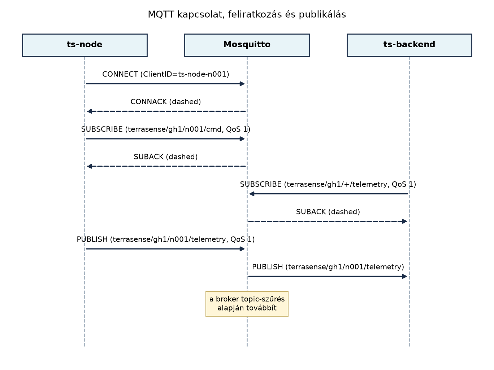

A TerraSense üvegházban több tucat ts-node mér
hőmérsékletet, páratartalmat és talajnedvességet. Az adatokat egy
központi backendnek rögzítenie kell, a riasztási szabályoknak azonnal
értesülniük kell, a kezelői dashboardnak pedig friss értékeket kell
mutatnia. Egyetlen adatforrásnak tehát több fogyasztója van. Ha minden
eszköz közvetlenül, kérés–válasz stílusban kapcsolódna a backendhez,
akkor a backendnek ismernie kellene minden eszköz címét, az eszközöknek
pedig a backend elérhetőségét, és minden új fogyasztó belépése új
kapcsolatokat igényelne. Ráadásul az eszközök gyakran alszanak, és nem
várhatnak arra, hogy a backend éppen elérhető legyen.
Az MQTT (Message Queuing Telemetry Transport) ezt a problémát a publish/subscribe (publikálás/feliratkozás) modell segítségével oldja meg: az eszközök nem egymásnak küldenek üzenetet, hanem egy központi brokernek, aki a címzés helyett topic alapján továbbítja az üzenetet minden érdeklődő félnek. Ebben az alfejezetben megismerjük a modellt, a topic-hierarchiát és a wildcardokat, majd a TerraSense rendszerhez rögzítjük a konkrét topic-konvenciót, amelyet a későbbi MQTT-laborok, a gateway és a backend is használni fog.
Az MQTT egy alkalmazásrétegbeli, TCP fölött futó, alacsony szigorú üzenetkezelő protokoll. A résztvevők szerepei:
ts-node, a ts-gw és a ts-backend
is MQTT-kliens./ jellel szintekre tagolt címke, amelyre az üzenetet
publikálják, vagy amelyre fel lehet iratkozni.Definíció. A publish/subscribe (pub/sub) kommunikációs modellben a küldő (publisher) nem ismeri a fogadók (subscriber) kilétét; az üzeneteket egy topicra publikálja, a broker pedig az aktuális feliratkozások alapján kézbesíti minden érdeklődőnek. A feliratkozás aszinkron: a subscriber nem kérdez, hanem értesítést kap, amikor üzenet érkezik.
A pub/sub három fontos szétcsatolást biztosít:
A broker a rendszer központi eleme. Feladatai:
A broker nem értelmezi a payloadot, nem módosítja a topicot, és nem végez tartalmi útválasztást. Az MQTT 5 bevezeti a shared subscription és a topic alias fogalmát is, de ezekre a későbbi alfejezetekben térünk ki.
A topic egy tetszőleges hosszúságú, de nem üres karakterlánc,
amelyben a szinteket a / karakter választja el.
Például:
terrasense/gh1/n001/telemetryEz négy szint: terrasense, gh1,
n001, telemetry. A topicok
case-sensitiveek, azaz terrasense és
TerraSense különböző topicok. A topicokban szóköz,
+ és # karakter nem szerepelhet szintnévként,
mert ezek speciális jelentésűek.
A feliratkozáskor wildcardokat használhatunk:
+): pontosan
egy szintet helyettesít. Például
terrasense/+/n001/telemetry illeszkedik minden
terrasense/gh1/n001/telemetry és
terrasense/gh2/n001/telemetry topicra, de nem illeszkedik
terrasense/gh1/n001/state-re, mert az utolsó szint
eltér.#): nulla vagy
több szintet helyettesít, de csak a topic utolsó
szintjeként állhat. Például terrasense/gh1/#
illeszkedik a terrasense/gh1/n001/telemetry,
terrasense/gh1/n001/state, sőt maga a
terrasense/gh1 topicra is (nulla további szint), viszont
nem illeszkedik terrasense/gh2/n001/telemetry-re.A wildcardok használatának szabályai:
# önállóan is használható (# minden
topicra illeszkedik), de ezt csak nagyon indokolt esetben szabad
használni, mert a forgalom és a jogosultságkezelés átláthatatlanná
válik.+ és a # csak feliratkozásban
használható, publikáláskor tilos.#
utáni további szintek (foo/#/bar) érvénytelenek.Jó topic-tervezés:
telemetry, state, cmd.+ vagy # csak egy jól meghatározott csoportot
fedjen le.Rossz példák:
gh1+n001 – a + nem használható szint
közepén.terrasense/ – üres szint a végén,
értelmezhetetlen./terrasense/gh1 – vezető /, üres első
szint.terrasense/#/telemetry – a # nem lehet
közbülső.Az alábbi diagram a TerraSense tipikus üzenetcseréjét mutatja: a
ts-node felcsatlakozik a brokerre, feliratkozik a neki
szóló parancsok topicjára, a ts-backend feliratkozik az
összes telemetriára, majd a ts-node publikál egy
telemetria-üzenetet.

Az ábra lépései:
ts-node TCP-kapcsolatot nyit a brokerre, majd
CONNECT csomagot küld a kliensazonosítóval
(ClientID). A broker CONNACK csomaggal
nyugtázza a kapcsolatot.ts-node SUBSCRIBE csomagot küld a
terrasense/gh1/n001/cmd topicra, QoS 1-gyel. A broker
SUBACK csomagban visszaadja a feliratkozás eredményét.ts-backend szintén SUBSCRIBE üzenetet
küld, de a terrasense/gh1/+/telemetry wildcard topicra, így
minden ezen a telephelyen lévő node telemetriáját megkapja.ts-node PUBLISH csomagban elküldi a
telemetriát. A broker a topic-szűrők alapján továbbítja a
ts-backendnek, mert annak előfizetése illeszkedik a
topicra.A payload formátumát ebben a fejezetben még nem szabjuk meg; a Adatformátumok: JSON, CBOR, Protocol Buffers, SenML alfejezetben fogjuk véglegesíteni. A lényeg most a címzési logika: a broker nem a payload alapján, hanem kizárólag a topic alapján dönt.
Az MQTT pub/sub modellje nem minden esetben ideális. A kérés–válasz (például HTTP REST) és a pub/sub közötti választásnál a következő szempontokat érdemes mérlegelni.
| Szempont | Kérés–válasz (pl. REST) | Publish/subscribe (MQTT) |
|---|---|---|
| Irány | A kliens kér, a szerver válaszol | A publisher egyirányúan küld, a broker szétoszt |
| Címzés | A kliens ismeri a szerver címét | A publisher nem ismeri a subscribereket |
| Több fogyasztó | Egy válasz egy kliensnek | Egy üzenet sok subscribernek |
| Időbeli csatolás | A szervernek elérhetőnek kell lennie a kéréskor | A broker pufferezhet (QoS > 0, session szerint) |
| Erőforrásigény | Nagyobb, ha sok eszköz folyamatosan polloz | Alacsony, mert nincs per-request HTTP overhead |
| Válasz szükségessége | Természetes | Külön reply-to topic + correlation ID szükséges |
Az MQTT-t akkor válasszuk, ha:
A kérés–választ akkor válasszuk, ha:
A TerraSense-ben a rendszer magja MQTT, de a kezelői felület és a backend közti kommunikáció továbbra is REST (a A ts-backend váza: REST API és egészségellenőrzés alfejezetben). A kettő jól kiegészíti egymást: az eszközök MQTT-n küldenek, a felhasználók pedig HTTP-n kérdeznek.
Az A TerraSense mintarendszer architektúrája
alfejezetben már bevezettük a
terrasense/<site>/<node>/... alapstruktúrát.
Most azt specifikáljuk pontosan, hogy a későbbi alfejezetek egyértelműen
hivatkozhassanak rá. A konvenció a következő:
| Topic | Irány | Tartalom | Retained? |
|---|---|---|---|
terrasense/<site>/<node>/telemetry |
eszköz → broker | mérési adatok (hőmérséklet, páratartalom, talajnedvesség) | nem |
terrasense/<site>/<node>/state |
eszköz → broker | aktuátorok és belső állapot (pl. szelep nyitva/zárva) | igen |
terrasense/<site>/<node>/cmd |
broker → eszköz | parancsok (pl. öntözés indítása) | nem |
terrasense/<site>/<node>/cmd/result |
eszköz → broker | parancs végrehajtás eredménye | nem |
terrasense/<site>/<node>/status |
eszköz → broker | jelenlét, kapcsolati állapot | igen (Last Will) |
Azonosítók:
site: a telephely rövid kódja, például gh1
(1-es üvegház).node: az eszköz egyedi azonosítója, például
n001.A telemetria-payload a későbbi séma szerint fog node_id,
seq és ts mezőket is tartalmazni, de ez a
topic szempontjából nem releváns.
Továbbvitt eredmény. Ez a topic-konvenció a TerraSense rendszer végleges konvenciója. Ezt használja a MQTT QoS, munkamenetek, retain, Last Will és MQTT 5 alfejezet a QoS és retained beállításoknál, a MQTT a gyakorlatban: Zephyr-kliens és Mosquitto alfejezet a Zephyr-kliens implementációnál, a A ts-gw szolgáltatás C++-ban: protokollfordítás MQTT-re alfejezet a gateway MQTT-kimeneténél, valamint a Ingest: MQTT-ből a backendbe, idempotensen alfejezet a Spring Boot MQTT-betöltésénél.
Példa üzenetváltás wildcarddal:
Tegyük fel, hogy a gh1 telephelyen három node
(n001, n002, n003) működik. A
ts-backend a terrasense/gh1/+/telemetry
topicra iratkozik fel, így mindhárom node telemetriáját megkapja, de nem
kapja meg a state vagy cmd üzeneteket. A
riasztási szolgáltatás viszont a terrasense/gh1/# szűrőre
iratkozik fel, hogy minden eseményt lásson. A ts-gw csak a
saját node-jai parancsaira iratkozik fel, például
terrasense/gh1/+/cmd, hogy minden node parancsát
kézbesítse.
Ebben a laborban a Mosquitto broker és a hozzá tartozó
mosquitto_pub és mosquitto_sub parancssori
kliensek segítségével próbáljuk ki a pub/sub modellt. A labor célja,
hogy megfigyeljük a broker topic-szűrését és a wildcardok működését.
Munkakönyvtár:
mkdir -p ~/iot-labor/i026 && cd ~/iot-labor/i026Előfeltétel: Docker és Docker Compose v2 telepítve.
Ha még nem fut a korábbi stack, hozzunk létre egy saját
compose.yaml fájlt a MQTT:
publish/subscribe, broker, topicok könyvtárban, és indítsuk el a
Mosquitto-t.
Hozzuk létre a compose.yaml fájlt:
services:
mosquitto:
image: eclipse-mosquitto:2
container_name: lab-mosquitto-i026
ports:
- "1883:1883"
volumes:
- ./mosquitto.conf:/mosquitto/config/mosquitto.conf:roHozzuk létre a mosquitto.conf fájlt, amely labor célra
engedélyezi az anonim hozzáférést (csak localhoston, nem éles
környezetben!):
listener 1883
allow_anonymous trueIndítsuk el a konténert:
docker compose up -dEllenőrizzük, hogy fut:
docker compose psTelepítsük a mosquitto-clients csomagot, ha még
nincs:
sudo apt update && sudo apt install -y mosquitto-clientsMost nyissunk egy új terminált, és iratkozzunk fel a
terrasense/gh1/# topicra:
mosquitto_sub -h localhost -p 1883 -t 'terrasense/gh1/#' -vA második terminálban publikáljunk egy telemetria-üzenetet:
mosquitto_pub -h localhost -p 1883 -t 'terrasense/gh1/n001/telemetry' -m '{"node_id":"n001","temp":23.5}'A feliratkozó terminálban várhatóan megjelenik:
terrasense/gh1/n001/telemetry {"node_id":"n001","temp":23.5}Most iratkozzunk fel egy szűkebb wildcarddal, például
terrasense/gh1/+/telemetry, egy másik terminálban.
Publikáljunk egy status üzenetet is, és figyeljük meg, hogy
az első wildcard (#) megkapja, a második (+ a
telemetry-re) nem:
mosquitto_pub -h localhost -p 1883 -t 'terrasense/gh1/n001/status' -m 'online'Az első feliratkozó (terrasense/gh1/#) ezt is megkapja,
a második (csak telemetry) nem. Ez jól mutatja a wildcardok
hatókörét.
Takarítás:
docker compose downA fenti labor során ellenőrizhetjük, hogy a broker helyesen szűri-e a topicokat. Hasznos parancsok:
mosquitto_sub -v kiírja a topicot is a payload
elé.mosquitto_sub -d debug módban mutatja a
kapcsolatfelvételt és a feliratkozást is.docker logs lab-mosquitto-i026 megmutatja a broker
naplóját, benne a klienscsatlakozásokat és a publikációkat.| Hibatünet | Lehetséges ok | Javítás |
|---|---|---|
A mosquitto_sub nem kap üzenetet |
A broker nem fut, vagy a port nem elérhető | Ellenőrizzük a docker compose ps kimenetét, és a
-h localhost -p 1883 paramétereket |
A mosquitto_sub kapcsolódik, de nem jelenik meg
semmi |
A topic kifejezés eltér, vagy a wildcard rossz | Ellenőrizzük a topic pontos helyesírását, használjuk a
-v kapcsolót, és próbáljuk ki a # szűrőt |
A mosquitto_pub hibát ír |
A broker nem engedélyezi az anonim kapcsolatot | Ellenőrizzük a mosquitto.conf tartalmát, és indítsuk
újra a konténert |
A # wildcard nem működik |
A # karaktert a shell értelmezi, vagy a topicban
középen használtuk |
Használjunk idézőjelet: 'terrasense/gh1/#', és
győződjünk meg róla, hogy a # a topic végén áll |
A # wildcard használata
publikáláskor: a # és a + csak
feliratkozásban érvényes; publikáláskor a MQTT-specifikáció tiltja. Ha
mégis megpróbáljuk, a broker visszautasítja a kapcsolatot. Ez egy
gyakori kezdő hiba, mert a felhasználó azt gondolja, hogy a wildcarddal
„több helyre” publikálhat.
A retained üzenet félreértése: a retained
flaggel jelölt üzenet a brokerben tárolódik, és minden új feliratkozó
azonnal megkapja, még akkor is, ha a publikáló már lecsatlakozott. Ez
hasznos a status topicnál, de ha nem tudatosan használjuk,
elavult állapotot okozhat. A retained üzenet törléséhez üres payloadú
retained üzenetet kell küldeni a topicra.
A topicok esetén a helyes hierarchia
elhanyagolása: ha a topicokat nem következetesen tervezzük, a
wildcard előfizetések nem fognak megfelelően működni. Például ha az
egyik eszköz gh1/n001/telemetry, a másik
gh1_n001_telemetry, akkor a gh1/+/telemetry
nem illeszkedik a másodikra.
(a) Fogalmi kérdés. Magyarázza el, miért nem tud egy MQTT-kliens közvetlenül egy másik kliensnek üzenetet küldeni a broker megkerülésével. Hogyan lehet mégis kérés–válasz jellegű kommunikációt megvalósítani pub/sub fölött?
(b) Tervezési feladat. A TerraSense rendszerben egy
új telephelyet (gh2) adunk hozzá, két node-dal
(n004, n005). Írja fel az összes topicot,
amelyre a ts-backendnek fel kell iratkoznia ahhoz, hogy
megkapja: (i) minden telemetriát mindkét telephelyről, (ii) minden
parancs-eredményt, de csak a gh2 telephelyről. Adja meg a
wildcard kifejezéseket.
(c) Implementációs feladat. A laborban használt
Mosquitto konfigurációt egészítse ki úgy, hogy a ts-backend
által használt user (backend) és jelszó
(labor-jelszo-2024, csak labor célra) hitelesítve legyen,
és ne engedjen anonim hozzáférést. Tesztelje a
mosquitto_sub és mosquitto_pub kliensekkel a
bejelentkezést.
(d) Hibakeresési feladat. Egy fejlesztő a következő
mosquitto_sub parancsot futtatja:
mosquitto_sub -t 'terrasense/#/cmd', de nem kap semmilyen
üzenetet. Mi a hiba? Javítsa a parancsot, és magyarázza el, miért nem
működik.
(a) Az MQTT-specifikáció szerint a kliensek nem
címezhetnek meg közvetlenül más klienseket; minden üzenet a brokeren
keresztül halad. Ennek oka a szétcsatolás fenntartása. Kérés–válasz
jellegű kommunikáció úgy valósítható meg, hogy a kérés küldője egy
válasz-topicot (reply-to) ad meg a payloadban vagy az MQTT
5 tulajdonságokban, a fogadó pedig erre a topicra publikálja a választ.
A korrelációhoz egyedi azonosítót (correlation ID) is
mellékelni kell.
(b) A ts-backend feliratkozásai:
terrasense/+/+/telemetry (két
+, mert a site és a node is változó).gh2 telephely parancs-eredményei:
terrasense/gh2/+/cmd/result.A wildcard kifejezések a megadott szinteknek felelnek meg. Például a
terrasense/gh2/+/cmd/result illeszkedik
terrasense/gh2/n004/cmd/result-re, de nem illeszkedik
terrasense/gh1/n004/cmd/result-re.
(c) Módosítsuk a mosquitto.conf
fájlt:
listener 1883
allow_anonymous false
password_file /mosquitto/config/passwdHozzuk létre a jelszófájlt a konténerben (vagy a hoston, és csatoljuk). Egyszerűbb megoldás: a konténer indítása előtt a hoston létrehozzuk a jelszót:
touch passwd
mosquitto_passwd -b passwd backend labor-jelszo-2024Majd a compose.yaml-ben csatoljuk a fájlt. A laborhoz
elegendő a bemutatás; a részletes hitelesítési beállítások a MQTT a gyakorlatban: Zephyr-kliens és Mosquitto
alfejezetben lesznek.
(d) A hiba az, hogy a # wildcard a
topic közepén áll: terrasense/#/cmd. A multi-level wildcard
csak az utolsó szinten lehet. Helyes kifejezés például
terrasense/+/+/cmd (ha a site és a node is tetszőleges),
vagy ha minden cmd-re kíváncsi, akkor
terrasense/# és szűrjön a kliens. Az eredeti parancsot a
MQTT-specifikáció érvénytelen feliratkozási szűrőként utasítja el.
Az MQTT a publish/subscribe modellre épül: a kliensek topicokra
publikálnak, a broker pedig az aktuális feliratkozások alapján
továbbítja az üzeneteket. A topicok / jellel tagolt
hierarchikus címkék, amelyekben a + egy szintet, a
# nulla vagy több szintet helyettesít feliratkozáskor. A
pub/sub térbeli, időbeli és szinkronizációs szétcsatolást biztosít, de
kérés–válaszhoz külön reply-to topicra és korrelációs azonosítóra van
szükség. Továbbvitt eredmény: a TerraSense végleges
topic-konvenciója:
terrasense/<site>/<node>/telemetry,
state, cmd, cmd/result és
status; a status retained + Last Will
használatú. Ezt a konvenciót használják a MQTT QoS,
munkamenetek, retain, Last Will és MQTT 5, a MQTT a gyakorlatban: Zephyr-kliens és Mosquitto, a
A ts-gw szolgáltatás C++-ban: protokollfordítás
MQTT-re és a Ingest: MQTT-ből a backendbe,
idempotensen alfejezetek. A laborban Mosquitto konzolkliensekkel
ellenőriztük a publikálást, feliratkozást és a wildcardok működését.
https://docs.oasis-open.org/mqtt/mqtt/v5.0/mqtt-v5.0.htmlhttps://docs.oasis-open.org/mqtt/mqtt/v3.1.1/mqtt-v3.1.1.htmlhttps://mosquitto.org/documentation/mosquitto-clients
csomag elérhetőségét a labor környezetben telepítés előtt ellenőrizni
kell. A laborban használt jelszó és felhasználónév kizárólag helyi,
laborcélú; éles rendszerben nem használható.